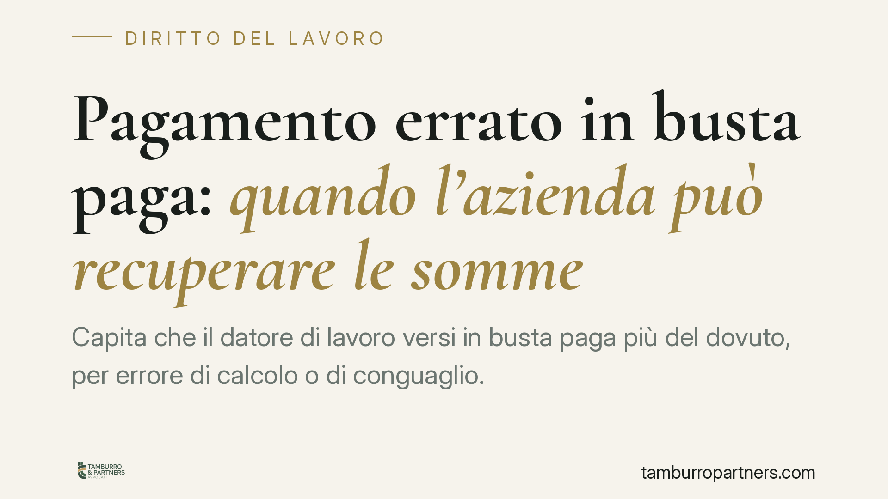

Pagamento errato in busta paga: quando l'azienda può recuperare le somme
Capita che il datore di lavoro versi in busta paga più del dovuto, per errore di calcolo o di conguaglio. Può chiedere indietro quelle somme? Sì, ma non senza limiti: conta quanto il lavoratore ha realmente incassato e la sua buona fede. Vediamo quali sono le regole e come difendersi da una richiesta di restituzione.

Il fatto: l'azienda scopre di aver pagato troppo
Un conguaglio sbagliato, una voce retributiva duplicata, un errore nel software paghe. Le cause di un pagamento in eccesso sono varie. Quando l'azienda se ne accorge, chiede la restituzione, spesso tramite trattenute sulle buste paga successive. Il punto critico è sapere quanto può effettivamente pretendere e a quali condizioni.
Inquadramento normativo
La base giuridica è l'art. 2033 del codice civile, che disciplina l'indebito oggettivo: chi ha pagato ciò che non doveva ha diritto alla restituzione di quanto versato per errore. La norma distingue due situazioni. Se chi ha ricevuto la somma era in buona fede, deve restituire il capitale ma deve interessi e frutti solo dalla domanda di restituzione. Se era in mala fede, interessi e frutti decorrono dal giorno del pagamento.
Un principio consolidato nella giurisprudenza della Sezione Lavoro della Corte di Cassazione riguarda l'oggetto della restituzione. Il lavoratore è tenuto a restituire soltanto la somma netta effettivamente incassata, non l'importo lordo. La ragione è intuitiva: le ritenute fiscali e previdenziali non sono mai entrate nel patrimonio del dipendente, perché il datore le ha versate direttamente all'Erario e agli enti previdenziali. Pretendere il lordo significherebbe chiedere al lavoratore denaro che non ha mai ricevuto. Il recupero delle imposte versate in eccesso segue invece canali propri, attraverso i meccanismi di conguaglio fiscale.
Quanto ai termini, occorre tenere distinti due piani che spesso vengono confusi. Il credito restitutorio del datore — cioè il diritto a riavere l'indebito — si prescrive nel termine ordinario decennale previsto dall'art. 2946 c.c. Diverso è il discorso per i crediti retributivi del lavoratore, che soggiacciono alla prescrizione quinquennale dell'art. 2948, n. 4, c.c. Qui parliamo del primo: il datore ha dieci anni per agire.
Implicazioni pratiche
Per il lavoratore dipendente, la differenza tra netto e lordo è sostanziale e spesso riduce in modo significativo l'importo richiesto. Una pretesa formulata sul lordo è, di regola, eccessiva e va contestata.
La buona fede, invece, non azzera il debito: incide solo su interessi e frutti. Chi riceve una somma palesemente anomala difficilmente potrà invocarla; chi riceve un conguaglio di importo non evidente ha argomenti migliori. In ogni caso il capitale netto resta dovuto.
Sul piano delle modalità, il datore privato non può operare trattenute arbitrarie e capienti: la giurisprudenza richiede criteri di proporzionalità che tutelino la funzione alimentare della retribuzione. Le modalità di recupero vanno quindi concordate o, in difetto, contestate.
Il caso del pubblico impiego
Nel rapporto di lavoro alle dipendenze della pubblica amministrazione la questione ha profili particolari. L'amministrazione, di fronte a somme erogate indebitamente, ha di norma l'obbligo di procedere al recupero, non la semplice facoltà, in ragione del principio di indisponibilità delle risorse pubbliche. Gli orientamenti della giurisprudenza, anche contabile, hanno tuttavia riconosciuto che il recupero deve avvenire con modalità sostenibili, tipicamente attraverso una rateizzazione proporzionata alla situazione economica del dipendente, evitando effetti pregiudizievoli immediati. Anche qui resta fermo il limite della restituzione nei confini del netto percepito.
Cosa fare in concreto
- Verificare l'importo richiesto. Controllare se la somma pretesa è calcolata sul netto effettivamente incassato o, erroneamente, sul lordo comprensivo di ritenute.
- Richiedere il conteggio analitico. Farsi consegnare dal datore il dettaglio dell'errore, con indicazione delle mensilità e delle voci interessate.
- Valutare la buona fede. Ricostruire se l'eccedenza era riconoscibile; questo profilo incide su interessi e frutti.
- Non accettare trattenute automatiche. È opportuno far verificare la correttezza e l'entità della richiesta prima di consentire qualsiasi prelievo in busta paga.
- Controllare i termini. Verificare quando è avvenuto il pagamento indebito rispetto al termine decennale di prescrizione del credito restitutorio.
Conclusione
Il datore che ha pagato troppo può recuperare, ma entro limiti precisi: solo il netto, con la buona fede che gioca su interessi e frutti e un termine decennale per agire. Una richiesta formulata sul lordo o con trattenute sproporzionate non è, di per sé, legittima e merita verifica.
---
*Contributo informativo a cura di Tamburro & Partners — Avv. Giuseppe Tamburro. Non costituisce parere legale.*
Ogni storia di lavoro ha i suoi tempi.
Se gestisci HR e vuoi un confronto su contenzioso, ispezioni o licenziamenti, scrivi allo studio. Ti rispondiamo entro un giorno lavorativo.